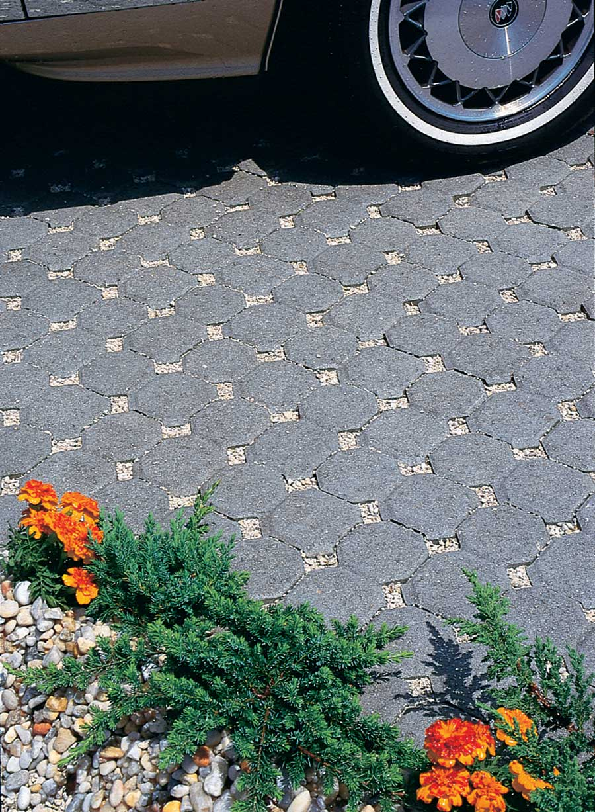
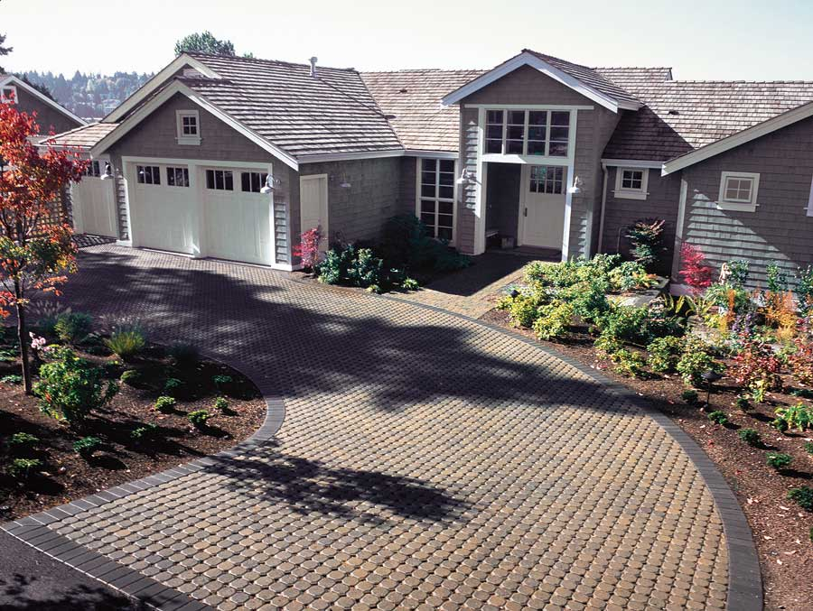
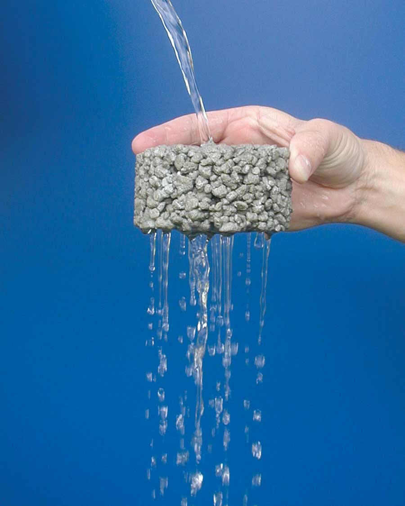
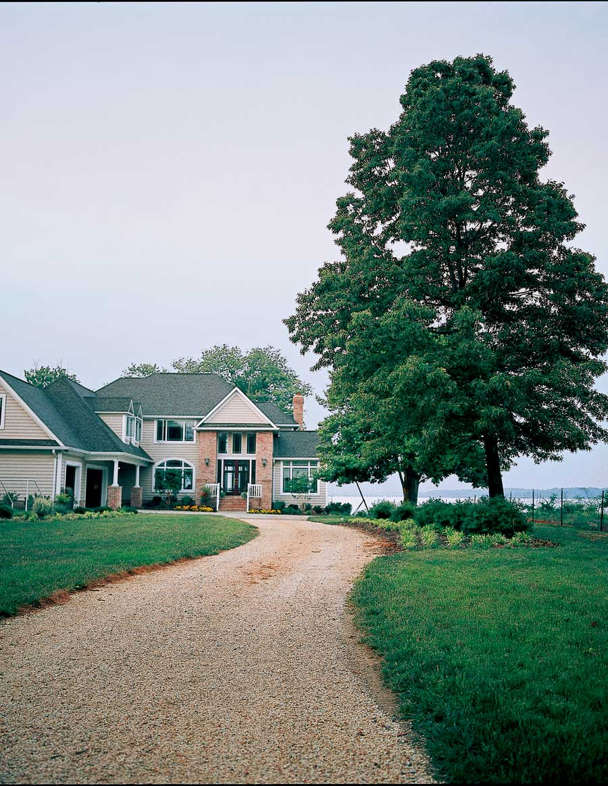
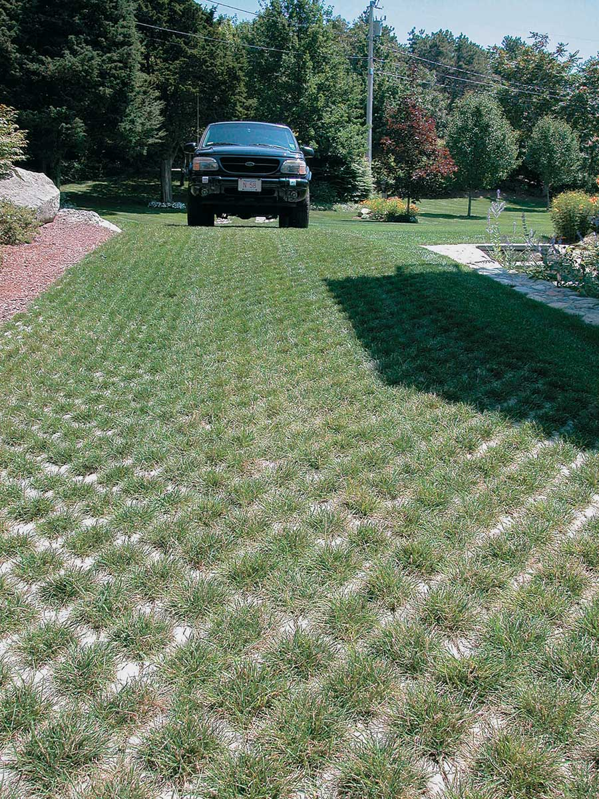

Green Patios, Walkways & Driveways Of Porous Pavement And Pervious Concrete
Consider one of these innovative and attractive options instead of old-fashioned concrete.
By Dan Chiras
April/May 2009
Although concrete lasts a long time - creating durable patios, driveways and roads, plus foundations for houses - the production of concrete takes a lot of energy. And that’s not the only problem with concrete: Whenever the ground is covered with it, rain doesn’t seep into the soil. As the rain accumulates and water starts flowing off the concrete, it can create problems. But materials are now available to provide a solid base and still allow water to seep through.
Benefits of Permeable Pavers
Groundwater is a source of drinking water for many people. It also nourishes deep-rooted plants and trees. Replenished by rain and melting snow, groundwater has become an endangered resource, partly because of the impermeable materials used in new developments in and around cities and towns. Roofs, roadways and runways, parking lots, driveways, sidewalks, patios and tennis courts prevent surface water from seeping into the ground.
These impervious surfaces often divert water into storm sewers and then into streams. The rush of water may result in costly and sometimes life-threatening floods. Surface runoff also carries toxic pollutants, such as chemicals and oil from paved roadways and parking lots, into rivers, lakes and reservoirs, where it pollutes drinking water supplies and harms wildlife.
Another problem caused by so much paving is the buildup of heat in and around cities and towns. Asphalt and concrete absorb sunlight and convert it to heat. The buildup of extra heat around cities and towns is known as the “heat island effect.”
Next time you build a patio, walkway, parking space or driveway, you can address these problems by installing permeable materials, some of which allow grass to grow in them. Many attractive options will permit water to drain into the ground. Some even reduce heat accumulation around buildings.
What Are Your Options?
For patios or walkways, consider installing permeable concrete pavers. The pavers are solid, but if they’re spaced correctly, water drains between them. Pavers are placed over a bed of sand or gravel, which filters water before it percolates into the soil. Permeable pavers are made from concrete or cut stone and are available in several styles. (For tips on installation, see Picture-perfect Paths & Patios.)
When replacing or creating a driveway or parking area, consider either permeable pavers or open-cell concrete blocks. These blocks are designed to support vehicles, but are sufficiently open to allow water to drain through them. The spaces are filled with gravel or sand. Grass or low ground cover can grow in the open spaces, which helps reduce heat buildup.
Another product that can be used for driveways is pervious concrete, aka porous pavement. As its name implies, this is a highly porous form of concrete. It’s made from aggregate (small stones) and cement, which binds the aggregate together. However, unlike conventional concrete, pervious concrete contains little, if any, sand. This results in a substantial number of open spaces in the concrete, basically a lot of holes through which water can flow into the ground.
Porous pavement is recommended by the U.S. Environmental Protection Agency and geotechnical engineers across the country to help manage storm water runoff. To learn more and find sources of materials, visit perviouspavement.org
and paversearch.com.
Two other intriguing options are Gravelpave2 and Grasspave2, made by Invisible Structures. Gravelpave2 is used for driveways, parking areas and pathways. It’s composed of plastic rings in a grid with a porous geotextile fabric molded to it. The grid and fabric are anchored to a porous base of sand or gravel. The grid is then filled with decorative gravel, forming a driveway or path that allows water to drain easily into the soil beneath. Check the company’s website for photos of numerous applications.
Grasspave2 also is used for parking areas and driveways. The ring-and-grid structure rests on a sandy gravel base. The voids are filled with “sharp sand” (sometimes called “builder’s sand,” it has jagged, not rounded, edges). The other ingredients, supplied by Invisible Structures, consist of a mixture of Hydrogrow polymer (the water-retaining material used in disposable diapers) and fertilizer. Grass seed or sod is planted on this mixture. Like Gravelpave2, this product allows for easy drainage, provides stability for driving or parking cars, and adds aesthetic value to a property. (The grass needs to be mowed from time to time.)
Grasspave2 has a surprisingly high load-bearing capacity (it can even support firetrucks!) - and protects the root systems of grass from compaction, which would normally kill the plants.
This product is used for main driveways, but it is not recommended for long-term (more than a week or so) parking. It works well for rarely used driveways that lead to backyard storage sheds, workshops, or recreational vehicles and boats stored in backyards. It has been used successfully for large parking lots that are used infrequently, such as near sports arenas.
Installation
Installation of all porous paving is straightforward and can be done by relative novices. However, professionals will often do a better job and complete the work faster because they have the right tools and equipment. Professionally installed driveways, walkways, patios and other structures also may last longer, making them worth the extra initial investment.
All of the products described here require excavation by hand or machine. They all start with a 6- to 8-inch-deep bed of sand or gravel, carefully leveled. If you install a system of pervious pavers or the Grasspave2 or Gravelpave2 yourself, be sure to read and study the manufacturer’s specifications, and follow the instructions carefully. When in doubt, call in an expert for consultation, or call the manufacturer and talk to its customer installation support staff.
Bear in mind that you also may need to obtain a building permit, so check with the local building department before you purchase materials.
What Will it Cost?
Pervious paving products cost more than standard paving materials such as asphalt and concrete, but installing patios, paths and driveways can add value to your home. Permeable paving is a green feature, and pavers can give your home extra curb appeal.
Cost Estimate: Installation of a concrete paver walkway 30 feet long by 3 feet wide. Includes a 6-inch gravel base, 4-inch sand base, hand compaction and grading, and concrete patio blocks.
Cost for materials only: $460
Contractor’s total, including materials, labor and markup: $1,050
Paving materials, per square foot installed:
Asphalt, 2 1⁄2 inches thick: $1.45
Brick, 1 1⁄2 inches thick: $11.00
Concrete, 6 inches thick: $5.85
Concrete pavers: $11.50
Crushed stone, 1 inch thick: $0.70
Grasspave2: $8.00
Gravelpave2: $8.00
Gravel, 6 inches thick: $0.85
Paving stones, 2 inches thick: $26.50
Costs are national averages and do not include sales tax.
Sources
This article is excerpted from Green Home Improvement by Mother Earth News contributing editor Dan Chiras. Visit The Evergreen Institute website for information about Dan's workshops on green building and renewable energy.
 KEITH WARD Green building expert Dan Chiras provides information and recommendations on energy-saving and eco-friendly projects in this ongoing department, “Green Home Improvement.” |
 UNI-GROUP USA Permeable pavers are used to create attractive driveways that support the weight of vehicles. |
 MUTUAL MATERIALS Rain and melting snow can drain through the spaces between permeable pavers to replenish groundwater. |
|
 MISSISSIPPI CONCRETE INDUSTRIES ASSOCIATION AND THE SOUTHEAST CEMENT ASSOCIATION Pervious concrete reduces the problem of storm water runoff from driveways. |
 INVISIBLE STRUCTURES INC. A gravel driveway made with the Gravelpave2 system allows water to filter through the gravel. |
 IDEAL CONCRETE BLOCK COMPANY The open-cell concrete grid of this driveway protects roots from compaction, which would eventually kill the grass. |